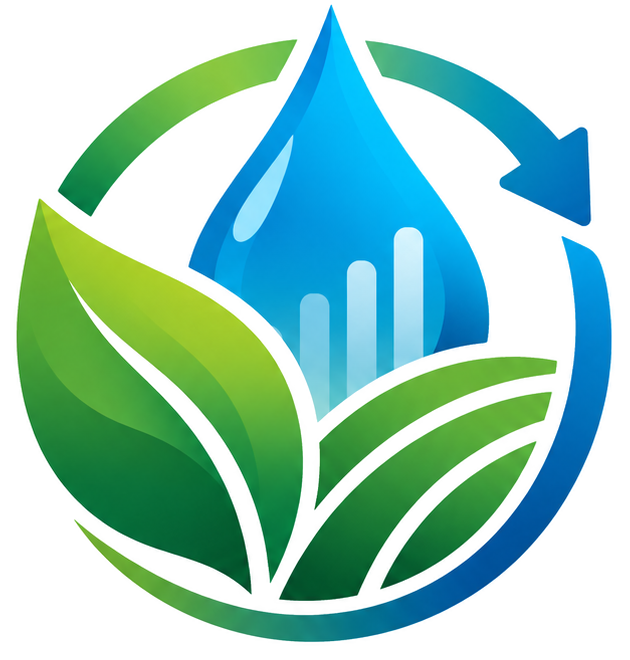

AGRIMETRIX · DIGITAL DEMONSTRATOR
Circular GreenhouseWATER · DATA · POWER

AGRIMETRIX · Circular Greenhouse
Mode simulasi. Angka di layar adalah data demonstrasi, bukan hasil pengujian greenhouse fisik.
HARVESTING MORE THAN WATER
Air dipulihkan. Data dibuka. Kendali dibagi.
Purwarupa ini memperlihatkan alur mikroklimat → keputusan → kondensasi → pencatatan air dan energi → tata kelola bersama.
offline-firstsensor-readyrule-based
✓
STATUS SISTEMStandby · kondisi stabilSumber: simulasi
ALUR SISTEM
Dari udara lembap menuju data yang dapat diperiksa
STANDBY
◌MikroklimatSuhu + RH
→
◇KeputusanRule-based
→
❄Kondensor< titik embun
→
◉Kondensatdiukur
→
▤Catatanair + energi
SKENARIO DEMOSimulasi deterministik00:00 simulasi
1 detik = 2 menit simulasi
SUMBER SENSORESP32 belum terhubungPolling berhenti
BELUM ADA DATA
Suhu udara26.5°CstabilKelembapan RH72.0%naik perlahanVPD0.96kPaindikator mikroklimatSuhu kondensor25.0°Cdi atas titik embun
MIKROKLIMAT
Jejak data terbaru
SuhuRH
◎
KENDALI TAHAP PERTAMA · RULE-BASED
Memantau mikroklimat
Peltier menunggu. Sistem bekerja ketika kondisi pemicu dan keselamatan terpenuhi.
PELTIER
OFF
CONDENSATION WINDOW
Peluang kondensasi
BELUM AKTIF
Titik embun21.2 °C
Permukaan kondensor25.0 °C
Selisih+3.8 °C
MODEL AI
ANFIS
TAHAP LANJUT
Belum dinyatakan aktif. ANFIS baru dipertimbangkan setelah tersedia data sensor nyata untuk pelatihan, validasi, dan pembandingan dengan kendali sederhana.
WATER + ENERGY
Air yang dipulihkan dibaca bersama energi, mutu, dan keselamatan.
Semua angka di halaman ini mengikuti skenario simulasi.
AIR TERKONDENSASI0mLbelum ada kondensasi
DIPAKAI ULANG0 mLsetelah pemeriksaan
Energi Peltier0.000kWhsimulasi 60 W saat aktifKipas + kendali0.000kWhsimulasi 8 WRasio penggunaan ulang—L/kWhbukan klaim performaTandon12%indikator kapasitas
SYSTEM HEALTH
Keselamatan dan kesiapan
NORMAL
Sensor suhu/RH✓ Normalstatus simulasi
KalibrasiPerlu verifikasi fisikcatatan kalibrasi belum diisi
Operator Demo CPendamping pencatatan · tahap latihan
LATIHAN
TIM PENGEMBANG
AGRIMETRIX
Ananda Restu SarivatunisaTim pengembang AGRIMETRIX
Puthut Bagus FerdyansyahTim pengembang AGRIMETRIX
DATA
Riwayat operasi yang dapat dibaca kembali.
Log dan snapshot telemetri disimpan lokal pada perangkat; ekspor CSV tidak membutuhkan internet.
CATATAN OPERASI
Event terbaru
TRANSPARANSI DATA
Apa yang belum dibuktikan?
Belum ada hasil lapangan untuk persentase penghematan air.Belum ada hasil konsumsi energi per liter pada perangkat fisik.Belum ada hasil kalibrasi sensor dan mutu kondensat yang tervalidasi.Belum ada model ANFIS terlatih dan tervalidasi.
PANDUAN DEMO
Dari purwarupa digital menuju uji perangkat yang dapat dipertanggungjawabkan.
Aplikasi diposisikan sebagai demonstrator alur interaksi dan sebagai antarmuka yang siap menerima data ESP32.
1
Pilih sumber data
Gunakan Demo untuk presentasi tanpa alat fisik atau Sensor untuk membaca endpoint ESP32 lokal.
2
Pantau mikroklimat
Suhu dan RH menghasilkan VPD serta titik embun sebagai informasi operasi.
3
Kendalikan dengan aturan yang dapat dijelaskan
Pada tahap awal, kendali berada di ESP32/rule-based dengan fail-safe; aplikasi memvisualisasikan statusnya.
4
Ukur air dan energi bersama
Kondensat, penggunaan ulang, dan kWh dicatat terpisah. Banyaknya air tidak dibaca tanpa kebutuhan energi.
5
Periksa sebelum penggunaan ulang
Kondensat tidak otomatis dinyatakan aman. Mutu air perlu diuji sesuai komoditas dan risiko.
6
Alihkan pengetahuan ke kelompok
Akses, pelatihan, rotasi, keputusan, kerja, dan manfaat menjadi bagian dari rancangan.
STATUS PURWARUPA
Yang sudah dapat didemonstrasikan
Web app responsif dan offline-capable, animasi alur WATER–DATA–POWER, simulasi mikroklimat, rule-based demo, pembacaan endpoint ESP32, pencatatan air/energi bila datanya tersedia, fail-safe demonstratif, log lokal, mockup tata kelola, dan ekspor CSV.
Yang masih menjadi tahap pengujian
Sensor fisik terkalibrasi, unit kondensasi nyata, meter energi terpasang, pemeriksaan mutu air, uji budidaya pembanding, pilot komunitas, dan ANFIS terlatih.
AGRIMETRIX
Harvesting More Than Water
Web demonstrator offline-first untuk memperlihatkan konsep WATER–DATA–POWER dan menerima data ESP32 ketika jaringan mendukung.
Ananda Restu Sarivatunisa · Puthut Bagus Ferdyansyah
SUMBER DATA
Pilih mode AGRIMETRIX
Belum diujiHubungkan perangkat ke Wi-Fi ESP32 atau jaringan yang sama. Web HTTPS tidak dapat membaca endpoint HTTP karena proteksi browser.
Catatan: mode Sensor tidak mengubah data yang hilang menjadi angka simulasi. Jika ESP32 tidak mengirim suatu parameter, aplikasi menampilkannya sebagai “—”.